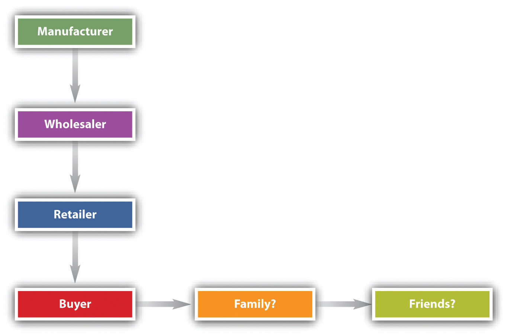

The UCC governs express warranties and various implied warranties, and for many years it was the only statutory control on the use and meanings of warranties. In 1975, after years of debate, Congress passed and President Gerald Ford signed into law the Magnuson-Moss Act, which imposes certain requirements on manufacturers and others who warrant their goods. We will examine both the UCC and the Magnuson-Moss Act.
An express warrantyAny manifestation of the nature or quality of goods that becomes a basis of the bargain. is created whenever the seller affirms that the product will perform in a certain manner. Formal words such as “warrant” or “guarantee” are not necessary. A seller may create an express warranty as part of the basis for the bargain of sale by means of (1) an affirmation of a fact or promise relating to the goods, (2) a description of the goods, or (3) a sample or model. Any of these will create an express warranty that the goods will conform to the fact, promise, description, sample, or model. Thus a seller who states that “the use of rustproof linings in the cans would prevent discoloration and adulteration of the Perform solution” has given an express warranty, whether he realized it or not.Rhodes Pharmacal Co. v. Continental Can Co., 219 N.E.2d 726 (Ill. 1976). Claims of breach of express warranty are, at base, claims of misrepresentation.
But the courts will not hold a manufacturer to every statement that could conceivably be interpreted to be an express warranty. Manufacturers and sellers constantly “puff” their products, and the law is content to let them inhabit that gray area without having to make good on every claim. UCC 2-313(2) says that “an affirmation merely of the value of the goods or a statement purporting to be merely the seller’s opinion or commendation of the goods does not create a warranty.” Facts do.
It is not always easy, however, to determine the line between an express warranty and a piece of puffery. A salesperson who says that a strawberry huller is “great” has probably puffed, not warranted, when it turns out that strawberries run through the huller look like victims of a massacre. But consider the classic cases of the defective used car and the faulty bull. In the former, the salesperson said the car was in “A-1 shape” and “mechanically perfect.” In the latter, the seller said not only that the bull calf would “put the buyer on the map” but that “his father was the greatest living dairy bull.” The car, carrying the buyer’s seven-month-old child, broke down while the buyer was en route to visit her husband in the army during World War II. The court said that the salesperson had made an express warranty.Wat Henry Pontiac Co. v. Bradley, 210 P.2d 348 (Okla. 1949). The bull calf turned out to be sterile, putting the farmer on the judicial rather than the dairy map. The court said the seller’s spiel was trade talk, not a warranty that the bull would impregnate cows.Frederickson v. Hackney, 198 N.W. 806 (Minn. 1924).
Is there any qualitative difference between these decisions, other than the quarter century that separates them and the different courts that rendered them? Perhaps the most that can be said is that the more specific and measurable the statement’s standards, the more likely it is that a court will hold the seller to a warranty, and that a written statement is easier to construe as a warranty than an oral one. It is also possible that courts look, if only subliminally, at how reasonable the buyer was in relying on the statement, although this ought not to be a strict test. A buyer may be unreasonable in expecting a car to get 100 miles to the gallon, but if that is what the seller promised, that ought to be an enforceable warranty.
The CISG (Article 35) provides, “The seller must deliver goods which are of the quantity, quality and description required by the contract and which are contained or packaged in the manner required by the contract. [And the] goods must possess the qualities of goods which the seller has held out to the buyer as a sample or model.”
Express warranties are those over which the parties dickered—or could have. Express warranties go to the essence of the bargain. An implied warrantyA warranty imposed by law that comes along with a product automatically., by contrast, is one that circumstances alone, not specific language, compel reading into the sale. In short, an implied warranty is one created by law, acting from an impulse of common sense.
Section 2-314 of the UCC lays down the fundamental rule that goods carry an implied warranty of merchantabilityMerchant-seller’s implied warranty that goods are suitable for the goods’ normal uses. if sold by a merchant-seller. What is merchantability? Section 2-314(2) of the UCC says that merchantable goods are those that conform at least to the following six characteristics:
For the purposes of Section 2-314(2)(c) of the UCC, selling and serving food or drink for consumption on or off the premises is a sale subject to the implied warranty of merchantability—the food must be “fit for the ordinary purposes” to which it is put. The problem is common: you bite into a cherry pit in the cherry-vanilla ice cream, or you choke on the clam shells in the chowder. Is such food fit for the ordinary purposes to which it is put? There are two schools of thought. One asks whether the food was natural as prepared. This view adopts the seller’s perspective. The other asks what the consumer’s reasonable expectation was.
The first test is sometimes said to be the “natural-foreign” test. If the substance in the soup is natural to the substance—as bones are to fish—then the food is fit for consumption. The second test, relying on reasonable expectations, tends to be the more commonly used test.
The Convention provides (Article 35) that “unless otherwise agreed, the goods sold are fit for the purposes for which goods of the same description would ordinarily be used.”
Section 2-315 of the UCC creates another implied warranty. Whenever a seller, at the time she contracts to make a sale, knows or has reason to know that the buyer is relying on the seller’s skill or judgment to select a product that is suitable for the particular purpose the buyer has in mind for the goods to be sold, there is an implied warranty that the goods are fit for that purpose. For example, you go to a hardware store and tell the salesclerk that you need a paint that will dry overnight because you are painting your front door and a rainstorm is predicted for the next day. The clerk gives you a slow-drying oil-based paint that takes two days to dry. The store has breached an implied warranty of fitness for particular purposeA seller’s implied warranty that the goods will be suitable for the buyer’s expressed need..
Note the distinction between “particular” and “ordinary” purposes. Paint is made to color and when dry to protect a surface. That is its ordinary purpose, and had you said only that you wished to buy paint, no implied warranty of fitness would have been breached. It is only because you had a particular purpose in mind that the implied warranty arose. Suppose you had found a can of paint in a general store and told the same tale, but the proprietor had said, “I don’t know enough about that paint to tell you anything beyond what’s on the label; help yourself.” Not every seller has the requisite degree of skill and knowledge about every product he sells to give rise to an implied warranty. Ultimately, each case turns on its particular circumstances: “The Convention provides (Article 35): [The goods must be] fit for any particular purpose expressly or impliedly made known to the seller at the time of the conclusion of the contract, except where the circumstances show that the buyer did not rely, or that it was unreasonable for him to rely, on the seller’s skill and judgment.”
Article 2 contains other warranty provisions, though these are not related specifically to products liability. Thus, under UCC, Section 2-312, unless explicitly excluded, the seller warrants he is conveying good title that is rightfully his and that the goods are transferred free of any security interest or other lien or encumbrance. In some cases (e.g., a police auction of bicycles picked up around campus and never claimed), the buyer should know that the seller does not claim title in himself, nor that title will necessarily be good against a third party, and so subsection (2) excludes warranties in these circumstances. But the circumstances must be so obvious that no reasonable person would suppose otherwise.
In Menzel v. List, an art gallery sold a painting by Marc Chagall that it purchased in Paris.Menzel v. List, 246 N.E.2d 742 (N.Y. 1969). The painting had been stolen by the Germans when the original owner was forced to flee Belgium in the 1930s. Now in the United States, the original owner discovered that a new owner had the painting and successfully sued for its return. The customer then sued the gallery, claiming that it had breached the implied warranty of title when it sold the painting. The court agreed and awarded damages equal to the appreciated value of the painting. A good-faith purchaser who must surrender stolen goods to their true owner has a claim for breach of the implied warranty of title against the person from whom he bought the goods.
A second implied warranty, related to title, is that the merchant-seller warrants the goods are free of any rightful claim by a third person that the seller has infringed his rights (e.g., that a gallery has not infringed a copyright by selling a reproduction). This provision only applies to a seller who regularly deals in goods of the kind in question. If you find an old print in your grandmother’s attic, you do not warrant when you sell it to a neighbor that it is free of any valid infringement claims.
A third implied warranty in this context involves the course of dealing or usage of trade. Section 2-314(3) of the UCC says that unless modified or excluded implied warranties may arise from a course of dealing or usage of trade. If a certain way of doing business is understood, it is not necessary for the seller to state explicitly that he will abide by the custom; it will be implied. A typical example is the obligation of a dog dealer to provide pedigree papers to prove the dog’s lineage conforms to the contract.
It may seem that a person asserting a claim for breach of warranty will have a good chance of success under an express warranty or implied warranty theory of merchantability or fitness for a particular purpose. In practice, though, claimants are in many cases denied recovery. Here are four general problems:
In addition to these general problems, the claimant faces additional difficulties stemming directly from warranty theory, which we take up later in this chapter.
The UCC permits sellers to exclude or disclaim warranties in whole or in part. That’s reasonable, given that the discussion here is about contract, and parties are free to make such contracts as they see fit. But a number of difficulties can arise.
The simplest way for the seller to exclude express warranties is not to give them. To be sure, Section 2-316(1) of the UCC forbids courts from giving operation to words in fine print that negate or limit express warranties if doing so would unreasonably conflict with express warranties stated in the main body of the contract—as, for example, would a blanket statement that “this contract excludes all warranties express or implied.” The purpose of the UCC provision is to prevent customers from being surprised by unbargained-for language.
Implied warranties can be excluded easily enough also, by describing the product with language such as “as is” or “with all faults.” Nor is exclusion simply a function of what the seller says. The buyer who has either examined or refused to examine the goods before entering into the contract may not assert an implied warranty concerning defects an inspection would have revealed.
The Convention provides a similar rule regarding a buyer’s rights when he has failed to inspect the goods (Article 35): “The seller is not liable…for any lack of conformity of the goods if at the time of the conclusion of the contract the buyer knew or could not have been unaware of such lack of conformity.”
Section 2-316(2) of the UCC permits the seller to disclaim or modify the implied warranty of merchantability, as long as the statement actually mentions “merchantability” and, if it is written, is “conspicuous.” Note that the disclaimer need not be in writing, and—again—all implied warranties can be excluded as noted.
Section 2-316(2) of the UCC permits the seller also to disclaim or modify an implied warranty of fitness. This disclaimer or modification must be in writing, however, and must be conspicuous. It need not mention fitness explicitly; general language will do. The following sentence, for example, is sufficient to exclude all implied warranties of fitness: “There are no warranties that extend beyond the description on the face of this contract.”
Here is a standard disclaimer clause found in a Dow Chemical Company agreement: “Seller warrants that the goods supplied here shall conform to the description stated on the front side hereof, that it will convey good title, and that such goods shall be delivered free from any lawful security interest, lien, or encumbrance. SELLER MAKES NO WARRANTY OF MERCHANTABILITY OR FITNESS FOR A PARTICULAR USE. NOR IS THERE ANY OTHER EXPRESS OR IMPLIED WARRANTY.”
Express and implied warranties and their exclusion or limitation can often conflict. Section 2-317 of the UCC provides certain rules for deciding which should prevail. In general, all warranties are to be construed as consistent with each other and as cumulative. When that assumption is unreasonable, the parties’ intention governs the interpretation, according to the following rules: (a) exact or technical specifications displace an inconsistent sample or model or general language of description; (b) a sample from an existing bulk displaces inconsistent general language of description; (c) express warranties displace inconsistent implied warranties other than an implied warranty of fitness for a particular purpose. Any inconsistency among warranties must always be resolved in favor of the implied warranty of fitness for a particular purpose. This doesn’t mean that warranty cannot be limited or excluded altogether. The parties may do so. But in cases of doubt whether it or some other language applies, the implied warranty of fitness will have a superior claim.
After years of debate over extending federal law to regulate warranties, Congress enacted the Magnuson-Moss Federal Trade Commission Warranty Improvement Act (more commonly referred to as the Magnuson-Moss Act) and President Ford signed it in 1975. The act was designed to clear up confusing and misleading warranties, where—as Senator Magnuson put it in introducing the bill—“purchasers of consumer products discover that their warranty may cover a 25-cent part but not the $100 labor charge or that there is full coverage on a piano so long as it is shipped at the purchaser’s expense to the factory.…There is a growing need to generate consumer understanding by clearly and conspicuously disclosing the terms and conditions of the warranty and by telling the consumer what to do if his guaranteed product becomes defective or malfunctions.” The Magnuson-Moss Act only applies to consumer products (for household and domestic uses); commercial purchasers are presumed to be knowledgeable enough not to need these protections, to be able to hire lawyers, and to be able to include the cost of product failures into the prices they charge.
The act has several provisions to meet these consumer concerns; it regulates the content of warranties and the means of disclosing those contents. The act gives the Federal Trade Commission (FTC) the authority to promulgate detailed regulations to interpret and enforce it. Under FTC regulations, any written warranty for a product costing a consumer more than ten dollars must disclose in a single document and in readily understandable language the following nine items of information:
In addition to these requirements, the act requires that the warranty be labeled either a full or limited warranty. A full warrantyUnder the Magnuson-Moss Act, a complete promise of satisfaction limited only in duration. means (1) the defective product or part will be fixed or replaced for free, including removal and reinstallation; (2) it will be fixed within a reasonable time; (3) the consumer need not do anything unreasonable (like shipping the piano to the factory) to get warranty service; (4) the warranty is good for anyone who owns the product during the period of the warranty; (5) the consumer gets money back or a new product if the item cannot be fixed within a reasonable number of attempts. But the full warranty may not cover the whole product: it may cover only the hard drive in the computer, for example; it must state what parts are included and excluded. A limited warrantyUnder the Magnuson-Moss Act, a less-than-full warranty. is less inclusive. It may cover only parts, not labor; it may require the consumer to bring the product to the store for service; it may impose a handling charge; it may cover only the first purchaser. Both full and limited warranties may exclude consequential damages.
Disclosure of the warranty provisions prior to sale is required by FTC regulations; this can be done in a number of ways. The text of the warranty can be attached to the product or placed in close conjunction to it. It can be maintained in a binder kept in each department or otherwise easily accessible to the consumer. Either the binders must be in plain sight or signs must be posted to call the prospective buyer’s attention to them. A notice containing the text of the warranty can be posted, or the warranty itself can be printed on the product’s package or container.
Phantom warranties are addressed by the Magnuson-Moss Act. As we have seen, the UCC permits the seller to disclaim implied warranties. This authority often led sellers to give what were called phantom warranties—that is, the express warranty contained disclaimers of implied warranties, thus leaving the consumer with fewer rights than if no express warranty had been given at all. In the words of the legislative report of the act, “The bold print giveth, and the fine print taketh away.” The act abolished these phantom warranties by providing that if the seller gives a written warranty, whether express or implied, he cannot disclaim or modify implied warranties. However, a seller who gives a limited warranty can limit implied warranties to the duration of the limited warranty, if the duration is reasonable.
A seller’s ability to disclaim implied warranties is also limited by state law in two ways. First, by amendment to the UCC or by separate legislation, some states prohibit disclaimers whenever consumer products are sold.A number of states have special laws that limit the use of the UCC implied warranty disclaimer rules in consumer sales. Some of these appear in amendments to the UCC and others are in separate statutes. The broadest approach is that of the nine states that prohibit the disclaimer of implied warranties in consumer sales (Massachusetts, Connecticut, Maine, Vermont, Maryland, the District of Columbia, West Virginia, Kansas, Mississippi, and, with respect to personal injuries only, Alabama). There is a difference in these states whether the rules apply to manufacturers as well as retailers. Second, the UCC at 2-302 provides that unconscionable contracts or clauses will not be enforced. UCC 2-719(3) provides that limitation of damages for personal injury in the sale of “consumer goods is prima facie unconscionable, but limitation of damages where the loss is commercial is not.” (Unconscionability was discussed in Chapter 12 "Legality".)
A first problem with warranty theory, then, is that it’s possible to disclaim or limit the warranty. The worst abuses of manipulative and tricky warranties are eliminated by the Magnuson-Moss Act, but there are several other reasons that warranty theory is not the panacea for claimants who have suffered damages or injuries as a result of defective products.
A second problem with warranty law (after exclusion and modification of warranties) is that of privityThe relationship between two contracting parties.. Privity is the legal term for the direct connection between the seller and buyer, the two contracting parties. For decades, the doctrine of privity has held that one person can sue another only if they are in privity. That worked well in the days when most commerce was local and the connection between seller and buyer was immediate. But in a modern industrial (or postindustrial) economy, the product is transported through a much larger distribution system, as depicted in Figure 17.2 "Chain of Distribution". Two questions arise: (1) Is the manufacturer or wholesaler (as opposed to the retailer) liable to the buyer under warranty theory? and (2) May the buyer’s family or friends assert warranty rights?
Figure 17.2 Chain of Distribution
Suppose Carl Consumer buys a new lamp for his family’s living room. The lamp is defective: Carl gets a serious electrical shock when he turns it on. Certainly Carl would be covered by the implied warranty of merchantability: he’s in direct privity with the seller. But what if Carl’s spouse Carlene is injured? She didn’t buy the lamp; is she covered? Or suppose Carl’s friend David, visiting for an afternoon, gets zapped. Is David covered? This gets to horizontal privityThe relationship between the original supplier of a product and an ultimate user or a bystander affected by it., noncontracting parties who suffer damages from defective goods, such as nonbuyer users, consumers, and bystanders. Horizontal privity determines to whose benefit the warranty “flows”—who can sue for its breach. In one of its rare instances of nonuniformity, the UCC does not dictate the result. It gives the states three choices, labeled in Section 2-318 as Alternatives A, B, and C.
Alternative A says that a seller’s warranty extends “to any natural person who is in the family or household of his buyer or who is a guest in his home” provided (1) it is reasonable to expect the person suffering damages to use, consume, or be affected by the goods and (2) the warranty extends only to damages for personal injury.
Alternative B “extends to any natural person who may reasonably be expected to use, consume, or be affected by the goods, and who is injured in person by breach of the warranty.” It is less restrictive than the first alternative: it extends protection to people beyond those in the buyer’s home. For example, what if Carl took the lamp to a neighbor’s house to illuminate a poker table: under Alternative B, anybody at the neighbor’s house who suffered injury would be covered by the warranty. But this alternative does not extend protection to organizations; “natural person” means a human being.
Alternative C is the same as B except that it applies not only to any “natural person” but “to any person who is injured by breach of the warranty.” This is the most far-reaching alternative because it provides redress for damage to property as well as for personal injury, and it extends protection to corporations and other institutional buyers.
One may incidentally note that having three different alternatives for when third-party nonpurchasers can sue a seller or manufacturer for breach of warranty gives rise to unintended consequences. First, different outcomes are produced among jurisdictions, including variations in the common law. Second, the great purpose of the Uniform Commercial Code in promoting national uniformity is undermined. Third, battles over choice of law—where to file the lawsuit—are generated.
UCC, Section 2A-216, provides basically the same alternatives as applicable to the leasing of goods.
The traditional rule was that remote selling parties were not liable: lack of privity was a defense by the manufacturer or wholesaler to a suit by a buyer with whom these entities did not themselves contract. The buyer could recover damages from the retailer but not from the original manufacturer, who after all made the product and who might be much more financially able to honor the warranty. The UCC takes no position here, but over the last fifty years the judicial trend has been to abolish this vertical privityPrivity between parties (manufacturer and retailer) occupying adjoining levels in product distribution systems. requirement. (See Figure 17.2 "Chain of Distribution"; the entities in the distribution chain are those in vertical privity to the buyer.) It began in 1958, when the Michigan Supreme Court overturned the old theory in an opinion written by Justice John D. Voelker (who also wrote the novel Anatomy of a Murder, under the pen name Robert Traver).Spence v. Three Rivers Builders & Masonry Supply, Inc., 90 N.W.2d 873 (Mich. 1958).
After disclaimers and privity issues are resolved, other possible impediments facing the plaintiff in a products-liability warranty case are issues of assumption of the risk, contributory negligence, and comparative negligence (discussed in Chapter 7 "Introduction to Tort Law" on torts).
Courts uniformly hold that assumption of risk is a defense for sellers against a claim of breach of warranty, while there is a split of authority over whether comparative and contributory negligence are defenses. However, the courts’ use of this terminology is often conflicting and confusing. The ultimate question is really one of causation: was the seller’s breach of the warranty the cause of the plaintiff’s damages?
The UCC is not markedly helpful in clearing away the confusion caused by years of discussion of assumption of risk and contributory negligence. Section 2-715(2)(b) of the UCC says that among the forms of consequential damage for which recovery can be sought is “injury to person or property proximately resulting from any breach of warranty” (emphasis added). But “proximately” is a troublesome word. Indeed, ultimately it is a circular word: it means nothing more than that the defendant must have been a direct enough cause of the damages that the courts will impose liability. Comment 5 to this section says, “Where the injury involved follows the use of goods without discovery of the defect causing the damage, the question of ‘proximate’ turns on whether it was reasonable for the buyer to use the goods without such inspection as would have revealed the defects. If it was not reasonable for him to do so, or if he did in fact discover the defect prior to his use, the injury would not proximately result from the breach of warranty.”
Obviously if a sky diver buys a parachute and then discovers a few holes in it, his family would not likely prevail in court when they sued to recover for his death because the parachute failed to function after he jumped at 5,000 feet. But the general notion that it must have been reasonable for a buyer to use goods without inspection can make a warranty case difficult to prove.
A first basis of recovery in products-liability theory is breach of warranty. There are two types of warranties: express and implied. Under the implied category are three major subtypes: the implied warranty of merchantability (only given by merchants), the implied warranty of fitness for a particular purpose, and the implied warranty of title. There are a number of problems with the use of warranty theory: there must have been a sale of the goods; the plaintiff must bring the action within the statute of limitations; and the plaintiff must notify the seller within a reasonable time. The seller may—within the constraints of the Magnuson-Moss Act—limit or exclude express warranties or limit or exclude implied warranties. Privity, or lack of it, between buyer and seller has been significantly eroded as a limitation in warranty theory, but lack of privity may still affect the plaintiff’s recovery; the plaintiff’s assumption of the risk in using defective goods may preclude recovery.